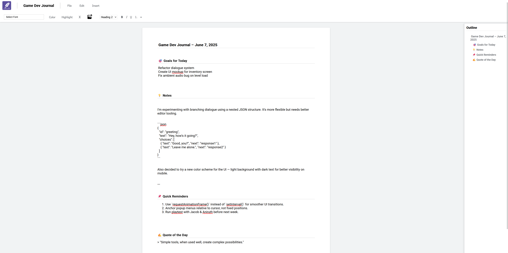

Inscribe
A minimal writing environment designed to encourage focus, simplicity, and full local control. Built for developers and creatives, it operates like a digital notebook supporting Markdown and file-based saving directly to the user's computer.
Overview
Inscribe was born from a simple problem: my documents were filling up my Google Drive while I had plenty of local storage. I wanted a Google Docs-like environment that didn't collect data or require cloud synchronization, just a local-first writing tool where I maintain complete control.
The tool provides a clean, distraction-free interface for writing and organizing documents. Unlike cloud-based alternatives, everything stays on your device, with manual save controls so you decide when and where your work is stored.
Problem Statement
While working on projects I realised that alot of my documents were filling up my google drive. I saw I had alot of space on my hard drives and thought that a google doc like site that does not use any information apart from where to save files would be useful.
Design & Development
Inscribe was built with a focus on speed, simplicity, and user autonomy. It’s a fully client-side application that avoids any external dependencies or cloud integrations.
Tech Stack
- HTML, CSS, JavaScript – No frameworks, fully browser-based for accessibility and portability.
- File APIs – Enables users to manually open, edit, and save `.docx` or `.pdf` files to their local device.
- Custom Save Logic – Offers save/download buttons rather than autosaving or background storage.
Design Philosophy
Inspired by clean, distraction-free writing tools, Inscribe is designed to feel invisible, this allows the user to focus entirely on the text. Its retro-modern interface reflects a commitment to clarity and functionality.
Accessibility Focus
- Semantic HTML with keyboard-friendly navigation.
- Clear, legible type with responsive layouts.
- Designed to work without reliance on themes or system preferences like dark mode.
User Testing
Through user feedback, clean file exports, and editable titles were prioritized. This ensured the tool felt fluid but predictable, nothing is saved unless the user chooses to save it manually.
Key Features
Local-Only
All writing takes place in the browser. Nothing is stored online or auto-saved. Users are responsible for saving their work to disk.
Manual Save & Open
Users can load `.docx`, export as `.docx` or `.pdf` files and save edits using native browser file dialogs. No sign-in, no upload, no cloud.
Minimal UI
A clean and simple writing interface with no sidebar, no menus, and no distractions. Just you and your words.
Markdown Support
Supports standard Markdown syntax with a toggleable live preview, allowing users to format documents cleanly and efficiently.
Portable & Lightweight
No installation required. Just open the page and start writing. Works entirely in-browser on desktop or laptop devices.
Final Result
Inscribe provides a fast, no-nonsense writing experience for people who value autonomy over convenience. It avoids the noise of modern apps and gives control back to the user, with full ownership of their work.
